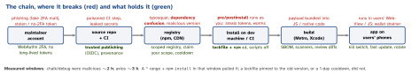

security · folio
In one line: Your app ships code from hundreds of people you never vetted, and a package manager
runs some of it at install time. Attackers go for the weakest link: a maintainer account
(phishing, stolen token), a look-alike name, an install script, a public name shadowing a
private one. Defence is layered: pin (lockfile + npm ci), delay (release cooldown),
don’t execute (no dependency scripts), verify (provenance), inventory (SBOM) and
rehearse the response. OWASP Mobile Top 10 (2024) M2.
Download PDF Print view LaTeX source


Incidents to name (all verified)
| Jun 2025 | @react-native-aria/* + @gluestack-ui/utils (17 pkgs, ∼1 M/week): leaked
maintainer token without 2FA; RAT appended to lib/index.js past the viewer’s width |
| 8 Sep 2025 | chalk, debug + 16 more (∼2 bn/week): maintainer phished via npmjs.help
“update your 2FA”; browser crypto-drainer |
| Sep 2025 | Shai-Hulud worm: steals npm/GitHub/cloud tokens, republishes the victim’s other packages; 500+ pkgs (CISA alert) |
| Nov 2025 | Shai-Hulud 2.0: preinstall hook, ∼800 pkgs, 25k+ GitHub repos; may wipe home dir |
| Mar 2026 | react-native-international-phone-number, react-native-country-select:
preinstall, Solana-memo C2, skips Russian locales |
| 31 Mar 2026 | axios 1.14.1 / 0.30.4: maintainer PC compromised; added dependency
plain-crypto-js dropped a RAT on install; published by CLI without the provenance real
releases carried |
How it works
- Typosquatting: a look-alike such as
react-native-reanimatenext to the real name. - Dependency confusion (Birsan, 2021(unverified)): internal
acme-utilsnot on npm → attacker publishes it publicly with a higher version → resolver prefers it. Fix: scoped names (@acme/) mapped to your registry, and own the scope on npm. - Install scripts:
preinstall/install/postinstallrun with your user’s rights on laptops and CI — where the tokens live. That is how worms spread. - Provenance:
npm publish --provenance(automatic with trusted publishing) signs, via Sigstore, a statement linking the tarball to a repo commit + CI run;npm audit signatureschecks it. A new version missing it is a red flag.
Example — lock it down (npm / pnpm)
# .npmrc
ignore-scripts=true # opt specific deps back in
@acme:registry=https://npm.acme.example/ # no confusion
# CI
npm ci # exact lockfile; fails if it drifts
npm audit signatures # registry signatures + provenance
npm sbom --sbom-format cyclonedx > sbom.json
# pnpm-workspace.yaml (pnpm 10: dep scripts OFF by default)
minimumReleaseAge: 1440 # minutes; default in pnpm 11
allowBuilds: # pnpm 11 (was onlyBuiltDependencies)
esbuild: truePinning beyond npm
- SPM: commit
Package.resolved(the Git commit per package + binary checksums);binaryTargetneeds a checksum. Xcode fails the build if an XCFramework’s signature changes. - CocoaPods: commit
Podfile.lock,pod install(notupdate) in CI. Trunk goes read-only 2 Dec 2026 — move to SPM. - Gradle: dependency locking +
verification-metadata.xml(checksums / PGP). - Bots: Dependabot / Renovate for small, reviewable PRs; Renovate
minimumReleaseAge= cooldown. - SBOM: CycloneDX (OWASP) or SPDX (ISO/IEC 5962) — answers “are we affected?” in minutes.
npm itself changed (after Sep 2025)
Classic tokens revoked 9 Dec 2025; write tokens are granular, ≤ 90 days (7-day default); 2FA for local publishing, WebAuthn over TOTP; trusted publishing (OIDC from GitHub Actions / GitLab) means no token to steal.
Incident response
Find affected versions in every lockfile and image → did an install run in the window? → treat that machine/runner as compromised: rotate every secret it held → rebuild from clean → pin a safe version → ship, and invalidate bundles built in the window.
Traps
- “We pin in
package.json” — transitive deps still float. The lockfile is the pin, andnpm installin CI may rewrite it. npm auditfinds known CVEs, not a malicious version published an hour ago.- Build-time only? chalk’s payload shipped inside web bundles to end users.
- Removing the bad version is not recovery — the stolen tokens still work.